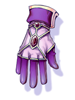

Stat Gloves
Jump to navigation
Jump to search
Walkthrough

- Complete the Encounter in a Strange Land quest until Step 8.
- NOTE #1 - If you need
 Splendide Coins to do step 7, do Troublesome Fairies until Step 2 to get 2 to buy the needed items.
Splendide Coins to do step 7, do Troublesome Fairies until Step 2 to get 2 to buy the needed items. - NOTE #2 - You need to do the Ring of the Wise King quest and equip the
Ring of the Wise King to buy them.
- NOTE #1 - If you need
- Do the Eclage Daily Quests for Splendide Coins.
- Talk to Armor Merchant Naphara
/navi ecl_in01 66/95to obtain your chosen type of glove.
Slotting
You can choose to slot your stat gloves. However by doing this, it has a chance to break your equipment.
- Go to Eclage
@go Eclage - Talk to Slot Expert.
/navi ecl_in01 64/97 - The price is 5 Splendide Coins. Choose Activate a Slot. Choose the type of Glove you have. It must be in your inventory.
List of Gloves
| Image | Name | Description |
|---|---|---|
|  | STR Glove[1] | MaxHP +100, MaxSP +20.
ATK +1 per 10 points of STR. ATK +1% when STR is 110 or higher. |

|
AGI Glove[1] | MaxHP +100, MaxSP +20.
FLEE+1 per 10 points of AGI. Perfect Dodge +1 when AGI is 110 or higher. |

|
VIT Glove[1] | MaxHP +100, MaxSP +20.
MHP+50 per 10 points of VIT. MHP +1% when VIT is 110 or higher. |
| INT Glove[1] | MaxHP +100, MaxSP +20.
MATK +1 per 10 points of INT. MATK +1% when INT is 110 or higher. | |

|
DEX Glove[1] | MaxHP +100, MaxSP +20.
HIT+1 per 10 points of DEX. Range ATK +1% when DEX is 110 or higher. |
| LUK Glove[1] | MaxHP +100, MaxSP +20.
CRIT+1 per 10 points of LUK. Critical damage 1% when LUK is 110 or higher. |